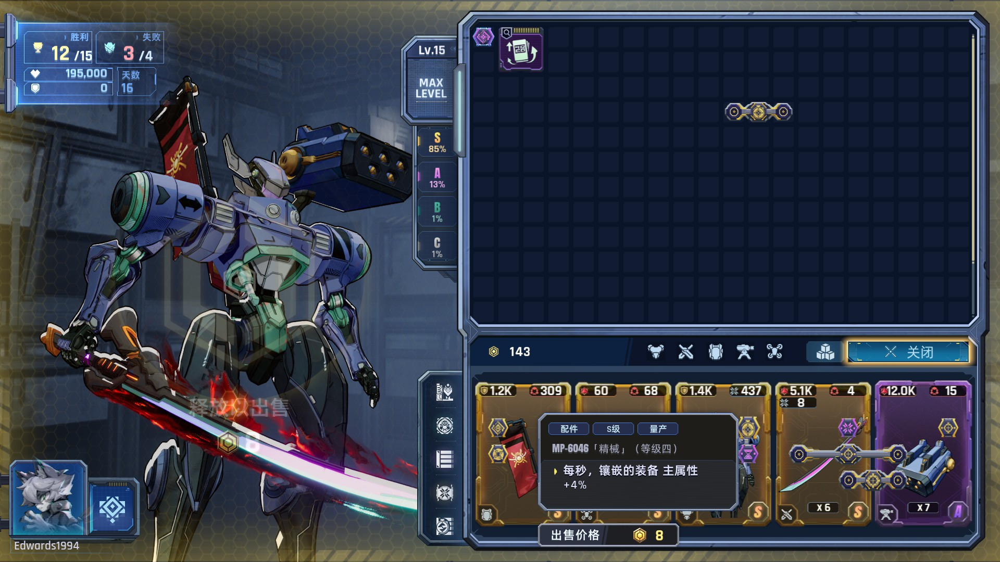
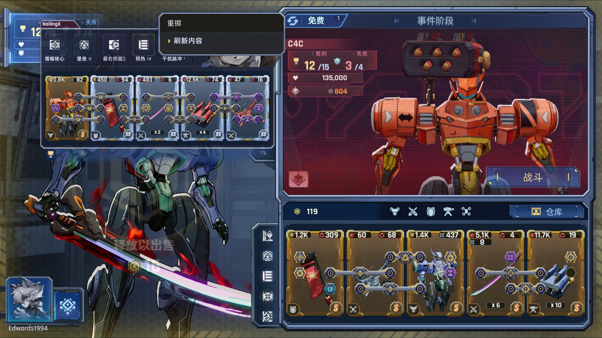
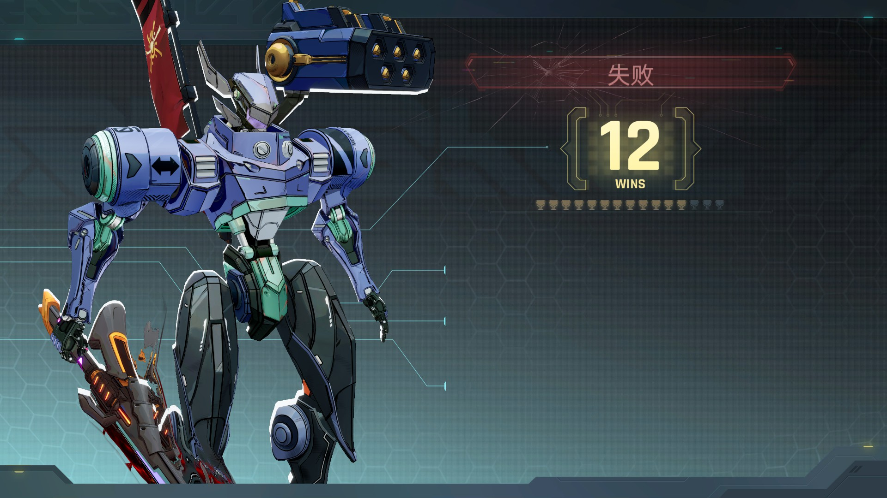

第二局爬塔 · 继续检验战力判断
最终结果：第16天，12胜4负。2026-11-16 01:05看到「失败 / 12 WINS」终局。第14、15天获胜，第16天输给C4C。10 WINS是挑战赛里程碑，之后继续爬塔；本次未达成15胜。终局证据 · 战力模型v0.5 · 四次败局综合复盘 · 段数显示问题
爬塔接手起点
玩家推进到爬塔后交回控制。第14天10/15胜、3/4负、195,000生命、146金币。
当前模型能判断什么
目前是有证据的机制评估，尚不是经过校准的胜率模型。比较双方前两轮伤害、启动顺序、每次属性获取、触发链、护盾与治疗、控制和最大生命削减。卡面单击×段数÷冷却只作静态基线，不能替代动态战斗。存在未知触发频率或统计口径时明确保留不确定性。
每场开战前记录胜负预测、信心（高／中／低）、主要威胁和预期战斗进程；战后填实际，错判也保留。只统计真正打过的对手，不把重掷掉的对手算作预测正确。已选对手形成的样本有选择偏差，少量胜局不能证明模型准确。
第14天购物：保住段数，放大两端伤害
先以8金币A单格冷却-7.5%补衣服空槽。多次刷新后买48金币S长配件MP-6042：每镶入一个配件（任意装备），所连装备伤害+64%。另16金币背部超频把冷却6.5秒→4.5秒。
拆下刀左下的使用成长+20%与原刀—肩炮伤害+200%短桥；把攻击段数+3桥移到中排，新长件从刀左下接到肩炮左下。刀约2.1K→5.2K，肩炮约3.5K→6.6K，仍为6段、7段。仓库旧件出售20金币，余额74。特价8金币力量随机A装备开出消耗力量换减伤的衣服，不适合当前构筑，售回8。未购买的慢速成长长件会占掉现有432%元素增幅，故放弃。


第14天战前预测 · 00:27
对手Teaguy，80,000生命，四件SS与一件A。SS刀4秒3段，命中按自身力量200%削减我方最大生命；SS肩炮10.5秒4段，每层力量额外加6伤害；SS背部5.5秒供力量并给所有力量装备+25，同时减速我方3秒。SS无人机部署给60力量，S科技每3秒随机加速5秒。未看到吸血或复活来源。
预测：胜，信心中等。我方195,000生命、更多攻击段数、新增伤和吸血提供余量；敌方已有高伤害面板和减速，不能按低生命当作弱敌。预计20秒内分出胜负，若敌方背部减速与加速使其连续输出，生存余量会缩小。保留首个对手，不消耗免费重掷。未核清所有配件的动态叠加，暂不报数值胜率。


第14天结果：11胜3负
胜负预测命中。刀118,039伤害、无人机434；肩炮未列入伤害贡献。无人机统计治疗148,320，背部护盾6,566、坚固154。敌方刀造成190,870，结束面板约40.9K，肩炮虽未列伤害，面板已到97.1K。说明对方增长威胁比初始单击面板显著更大，不能把本次胜利理解为轻松碾压。
吸血在生存上很重要；治疗统计是否含过量治疗未独立验证，不把148,320直接等同于有效回复。SS每秒12力量科技在增益表贡献108，可作为约9个有效计时周期的线索，但未抓到结束倒计时，20秒内结束的预测没有直接截图计时验证。当前前瞻胜负样本1/1，样本不足以判断准确率。74金币利息10、基础64，进入次日148金币。


第15天：从削减生命刀，试换命中成长刀
148金币起步，48金币买力量专属长伤害件（普通400%，力量装备1200%）替换上日按配件数增伤长件，旧件售出24。另16金币手部冷却-10%用于原刀，原刀冷却确认4.9秒。随后遇到16金币特价S「坚锋」：每次命中自身力量层数+10%，买入比较，原刀保留仓库。
新刀基础伤害340，原刀已成长到755；新刀冷却5.5秒，也没有继承原刀消耗品。这是实际代价。重接后力量专属长件走刀左中—肩炮左中，+3段数桥走刀右下—肩炮左下。新刀空右上装8金币「附魔8坚固」单格件，成为力量4／坚固8、6段；肩炮7段。使用时自身增益+16%桥改接无人机与衣服，原主属性+8%每秒桥与原刀一起留仓。预期刀命中增加力量，同时获得坚固→衣服加速→更快命中，形成概率科技辅助的成长链。
当前刀约4.4K、肩炮11.2K，余额76。先给旧刀买冷却、后决定换刀，导致这16金币当前不服务出战配置；下次先决定主武器，再购买专属消耗品。多次装配返回「目标插槽无效」，把物品移离仓库首行并对准左端插槽后成功；不能把未装上的尝试算作收益。
免费重掷避开「梦在飞」的额外感电触发、开局全加速和紧急模式组合；再避开「暴食大王」的2%最大生命燃烧伤害、无人机额外结算燃烧3次和首次致死回复50%组合。剩余对手knukzm，176,000生命，SS力量背部按自身力量200%提供伤害触发护盾，S无人机每台14%吸血，SS刀3段削减最大生命；B肩炮4段。
战前预测：胜，信心中等。敌方能成长与回复，但武器基础面板和攻击段数较低，我方双武器1200%加成及新刀命中成长预计能压过续航。主要输出预期为刀；若完成两轮刀击，力量应明显超过上一场1295。保留新刀试验，原刀与成长桥可用于之后回退。不给未校准的数值胜率。


第15天结果：12胜3负
预测胜命中。刀381,602、肩炮344,685、无人机1,338伤害。总力量3431：刀贡献1253力量和64坚固，另有增益来源贡献858力量、197坚固；背部637力量，初始科技300、无人机136、SS科技132、S科技100、肩炮15。新刀的成长方向得到本场支持，但不能单独分离各配件、加速和对手的影响。
己方治疗统计518,234，护盾17,747＋1,836＋1,330；对方刀468,796，其他伤害53,499、24,536、1,626，治疗346,182。敌方实际输出和恢复远高于预览直觉。战中倒计时36秒时我方146,602生命、对方123,492生命；截图没有覆盖结束瞬间，不虚报精确耗时。
重要校准：敌方战前刀显示3段，战中和战报为9段，召唤组件也显示了不同段数。可能存在配件或战中机制，未核查关键配件前不能定为Bug。后续选敌必须把配件、科技后的有效段数纳入估计。此时前瞻胜负2/2，但伤害威胁连续低估，模型仍不能称为准确。76金币结算10利息、67收入，下一天153金币。


第16天：补齐衣服，肩炮10段
衣服空槽装入S每秒主属性+4%；全体冷却-1.5%消耗品；A肩炮以8金币合成S。把肩炮单槽伤害+200%换成攻击段数+3，单段13.5K降为11.7K，7段变10段，静态一轮伤害94.5K→117K（约+24%），力量获取133→190，另保留刀/肩炮共享+3与力量伤害+1200%。未出售成功的旧配件不计入可用现金，出战119。
避开NailingX的开局充能/全体加速和SS坚固增长阵容。选C4C（HP135000）：SS成长力量刀，SS每3秒禁用随机装备3秒。战前预测：胜，置信度中等；我方首轮输出与吸血占优，主要风险是禁用打乱启动。模型新增：先核对配件和装备说明，不能照抄卡片段数。
新证据：NailingX的+6共享配件可正常解释九段；C4C卡片3段、tooltip6次、配件+3同时可见，确认预览至少存在显示不一致，尚未证实战斗算错。





第16天终局：12胜4负，战前预测失败
第4负后出现「失败 / 12 WINS」终局。最后一场我方伤害统计为空，治疗来源也为空，仅背部1173和坚固34护盾；力量汇总819（309＋300＋109＋96＋5），并未形成前一场3431力量的成长态。对手肩炮137214、刀125749、燃烧685伤害，合计263648；防御表护盾14820。最终统计界面顶部仍显示我方初始195000生命，不能拿它当结束剩余生命。
模型错误不是把刀肩炮静态面板相加算错，而是把“能活着启动并持续攻击”当成了既成事实。对手每3秒随机禁用3秒，我方肩炮10.8秒且核心刀可能受控。战中帧可见禁用样式；但截图没有完整记录每次控制对象和每次开火，不能断言禁用是唯一原因，也不能把空统计直接判为漏记Bug。单独保留候选007：零输出及统计核查。
经济反省：以119金币出战且尚有一次免费换敌机会，最后一条命的风险处理不够。50金币以上已不增加已实测的利息收益；应更积极寻找即时启动、充能、减冷却和开局保命，而不是持续放大尚未启动的成长输出。库存出售尝试没有到账的旧件仍在仓库，不能写作“已清空”。
每日结算 · 伤害为空 · 防御统计 · 增益统计 · 12胜终局



战力模型 v0.5：先判断能否启动，再算成长收益
| 检查层 | 现在怎样判断 | 本局证据或限制 |
|---|---|---|
| 输入一致性 | 同时读卡片、装备说明、共享配件、科技；段数冲突标记为未知并核对。 | C4C刀卡片3、说明6、单格+3，战斗6。BUG-006显示不一致已复现。 |
| 首轮时间 | 逐件记冷却、开局充能/加速、减速/禁用；比较主力和无人机首次生效的先后。未知叠加规则保留范围。 | 我方10.8秒肩炮未必能在敌方爆发前出手，吸血还依赖无人机部署和实际伤害。 |
| 控制情景 | 至少分别检查主刀被禁用、肩炮被禁用、辅助被禁用的情况。只有核心受控仍能活到启动，才给中高信心。 | 未记录完整控制时间轴，不能编造概率、精确冷却修正或胜率。 |
| 成长和续航 | 确认活过首轮后，再计算多段属性获取、命中增长、护盾和吸血；分开固定、线性、乘法成长。 | 第15天双主武器726287输出；第16天输出为空。大后期面板不保证首轮生存。 |
| 购买和选敌 | 先补最短板；生命只剩一次时，剩余刷新机会和超过利息上限的金币应优先换取当前生存。 | 第16天119金币、一次免费换敌未用，属于决策失误，不归咎于Bug。 |
| 预测校准 | 保留全部战前预测及误差，先核查过程再修规则。 | 本轮前瞻3场：第14、15天预测胜并胜，第16天预测胜却负。2/3只是描述，样本小且选敌有偏，不能称为可靠准确率。 |
下一局优先验证“主力被禁用时是否仍能在敌方第二轮前启动”，记录首击、无人机部署、控制对象、HP变化；若统计为空而录像可证明有效命中，再升级为统计Bug。模型当前仍是机制与情景评估，尚无校准的胜率预测。
四次败局一起看：探索有进展，决策执行仍不足
2026-11-16回看四场败局，并重新核对第4天伤害/防御、第6天伤害/敌方背部原文、第12天伤害/防御截图。以下把事实与解释分开；对手、商店和装配同时改变，不能当作单变量实验或胜率提升证明。
| 败局 | 直接证据 | 主要判断与遗漏 | 下次必须改变的决策 |
|---|---|---|---|
| 第4天，3胜1负 | 我方主武器21570＋4064；全部伤害30066。敌方治疗统计15275＋9159＋160＝24594，另有4260护盾；寄生背部可把减速变禁用，手武削减最大生命。伤害 · 防御 · 控制 | 我方供盾确实生效，但换入坚固装备减少力量供给，没有建立压过敌方回复的输出；同时面对控制和最大生命削减。不能仅看42K对30K生命判断优势。未分离各机制的贡献，治疗总量不等于全部有效回复。 | 购入防御件要说明多撑的时间能换来哪一轮输出；敌方有回复与最大生命削减时，不能只继续堆普通护盾。 |
| 第6天，4胜2负 | 己方主输出23660＋7544，对方50150＋27873；结束肩炮面板己方2.1K、敌方23.8K。敌背部每次给所有力量装备+10力量，并全体减速1.5秒。伤害 · 成长及减速原文 | 高估开局300力量与72K生命，低估对方持续强化整套力量装备和减速的组合。防御成长部件与输出部件的配合不如敌方集中；满五件、每件有配件，并不自动等于高协同。 | 分别评估初始属性、每轮新增属性、属性转伤倍率；比较双方成长过程，不能用一次性初始优势代替持续优势。 |
| 第12天，9胜3负 | 刀180904、肩炮111640，主输出292544；敌方护盾统计220899＋22634＋3283＝246816，己方15685＋3002＋1741＝20428。伤害 · 盾量 | 已经有输出，但低估敌方生存，己方缺少足够回复。对方开局135K生命不是它整场可承受伤害的上限。护盾累计生成量也不等于全部被实际吸收，不能直接拿总数相减还原剩余HP。 | 判断何时击杀要同时纳入供盾和有效治疗；伤害很高仍失败时先查防御，再决定补输出、回复或控制。次日加入吸血后的胜利支持这个方向，但不是因果验证。 |
| 第16天，12胜4负终局 | 我方伤害和治疗条目为空；敌方总伤害263648，科技每3秒随机禁用3秒；我方肩炮10.8秒。战中 · 统计 | 成长态强不等于能活着进入成长态。控制导致启动失败是合理解释，尚缺完整时间轴，不能确定唯一原因，也不能认定漏记伤害。 | 先推演主力被禁用的情景，再决定保留对手；最后一条命仍有119金币和一次免费重掷，资源没有充分转为当场生存。 |


哪些探索已经有证据
- 装配从单件转为整排连接：用户提醒共享配件与刀的左右孔后，完成了换序、跨卡同时增益、刀6段及肩炮7/10段的实际配置。改变来自用户先验和实机验证，不能全部归为AI独立发现。
- 学会追踪被动链：力量→概率坚固→衣服加速，刀命中继续增长，再由输出转护盾与吸血。第15天刀和肩炮合计726287伤害支持这套配置能形成高输出，但未证明循环无限或单个配件的边际收益。
- 经济规则有界面与结算支持：此版本每5金币得1利息、最多10；卖出、合成、消耗品都以实际到账或属性变化确认。第15天先强化旧刀再换刀浪费当期收益，末战留下119金币，说明知道规则不等于资源使用到位。
- 学会把模型误判、显示问题和战斗计算问题分开：段数显示不一致有配件及战斗对照；零伤害还没有命中被漏记的证据。两类报告和截图独立保存。
真正没有做好的自我改进
首局第4天已见敌方274220护盾，第10天被失盾转伤武器打出230984；第二局第12天仍低估盾循环。第二局第4天已知道控制风险，第16天又把启动能力估高。问题是有文字总结，却缺少开战前必须通过的检查。当前只是机制规则与证据库，尚不是经过训练、校准的胜率模型。
后续每场必须写清四个问题：①谁先有效攻击？②主力被控制时能否存活到下一次出手？③能否在敌方成长前击杀，或在持久战压过其回复？④购买、换序或换敌究竟改变哪个答案？缺少关键输入则标记“不确定”，不能用高品质、高血量或上一场胜利补齐信心。核对战后误差后，下一次遇到同类对手应检查实际决策是否改变，而不只检查报告有没有新增文字。
本次回读还纠正一处抄录：第12天敌方科技护盾为22634，旧逐日文字写22534，已按原图修正。该错误来自记录，不是游戏Bug。